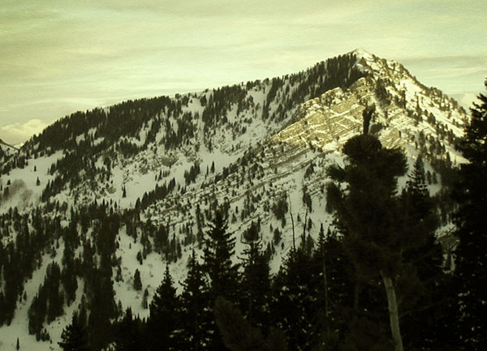
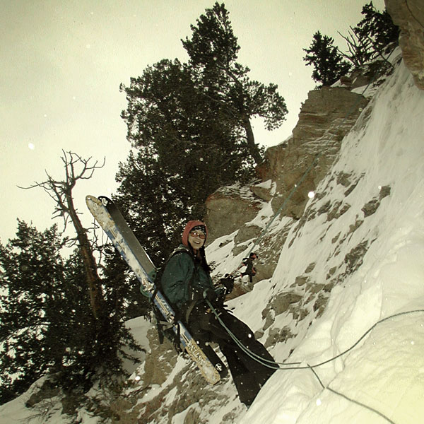
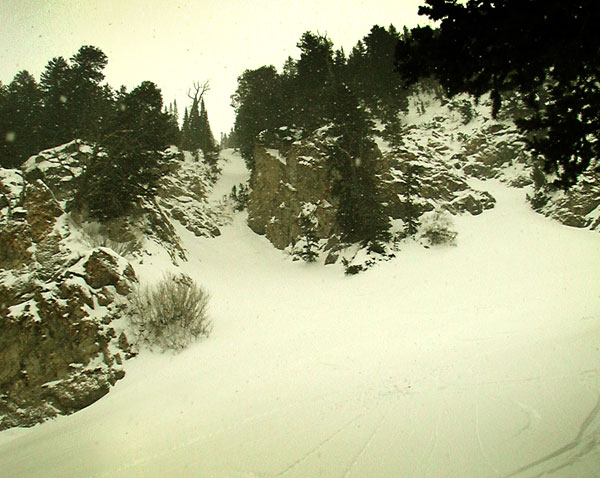

|
December 27
Raymond Norte & Shorte
Well, a year ago helmut and I started off down this chute, but
turned back once helmut came upon a short cliff band. Today, the
powder
princess and I returned with rope and harness, to complete the
voyage. Unfortunately, for lack of
a doggie
specific
harness, Star Child had to stay at home. Since my picts turned
out so bad, I decided to give them that "yellowish,
crappy
old photo" look. Enjoy!

The chute is slightly left of center of this pict that I took a couple
weeks earlier from Main Porter. In the picture it goes straight
down from the center of east Raymond ridge.

Here's the powder princess at the bottom of the rappel. I would have
shown the picture of her rappelling over the lip, but that shot
makes the cliff look like it's only about a 10 foot drop, which
it probably
is...

This is looking back up after making a few turns down the apron.
It looks kinda small in this photo but it's really HUGE!
Norte & Shorte, or whatever it's called, makes
an exciting home run after sessioning Raymond's North Glades.
The upper half of the run offers some great turns with that "over
a cliff"
feel.
The
bottom
apron rolls
out pretty
quickly,
but it's fun to ski the north drainage, which roller coasters down
through wide fields of mysteriously short & stubby pines. The chute
fills
in by the end of the season, and is also down climbable
or
jumpable
for
those
inclined
to steep freakishness. My plan is to return in a few months once
it fills in and ski it top to bottom, with a stop in the middle
to pull the ring and runners I've left behind. If you beat me to
it,
they're
on
skiers left, help yourself.
December 26
Georges Bowl, again.
It was bitter cold and the snow was completely windblown, but at
least there was a nice, long approach.
December 25. Xmas, Ya know!
Toot's ta boots
I don't know who named this run, but I don't think they did a very
good job of it. Star Child and I were quite pleased to discover deep,
soft powder on our one and only Christmas day run.
December 24
Maybird Trees
Great skiing down in the trees, and we were in radio contact
with another friend as he summited the Pheiferhorn above us,
making
us quite jealous. We discovered a ramshackel shelter on the ridge
and helped ourselves to a Christmas Eve shot of the Crown Royal
that
was stashed there!
December 19
Days fork, Toledo bowl
Days Fork was shit, but from the top of Toledo Bowl to LCC road was
Da Shit! Phenonemal corn snow blanketed the south faces. With the
sun low, temps low, and the winds constant, the south side offered
firm, but carveable corn even for our home run at 3:45.
December 18
Gobblers Knob
Big tour day for Star Child as we climbed from Porter Fork to
the top of Gobblers. Almost every surface had slid, creating
a snowpack
that was about two feet shallower than when we were there two
weeks ago. The massive funneling of the debris convieniently
cleared
a swatch through the wiene wackers, giving the north face a least
200
vft more open skiing. The screaming professor tested out his
new rando gear and for the first time was able to keep up with
leaping
ScruffBucket.
On another note, SomeGuy had a party. There was
a brainstorming session in which a new tag line for the foothill
freak was born: www.foothillfreak.com:
It's Fer Reals, Brah. Also at the party the utah classic
bumpersticker "I love mormon pussy" mysterious appeared on
SomeGuys vehicle....
December 14
Georges Bowl
We dawn patrolled our way up to Georges to get a birds eye view
of the avalanche that fatally trapped two snowshoers in Mineral
Fork.
On our way up, we were blown away by the sight of a recent slide
that seemingly came out of nowhere, took out the approach trail
(cardiff fork road), hit the valley bottom and shot up the opposite
side
of the
drainage, knocking over most of an aspen glade on it's way. Definitely
a slide to ruin your day, and a reminder why the snowshoers,
most likely never stood a chance. The snow up on Georges
was very fun, carveable powder, The icy road out was a good reminder
of why I wear a helmut. The remains of several massive avalanches
were good reminders of why the dangers of this sport should not
be underestimated.
December 12
Alta Day
Big Daddy was in town so an Alta day was called for. By the
last run, He had charmed and amassed a large posse of hot,
shredding
telemarking babes. This meant that if Big Daddy fell into
a tree well, there
would be a crew of darling young women to pull him out. Therefore,
I took off to hit some steep lines...
December 11
Mill D, Reynolds north trees, Big
Water area
We had a Phat possee. With it being a high avy day, I opted
for the security of the Mill D area. We entertained ourselves
with
ultra
low angle snow and tight tree runs.
December 5
Main Porter Fork
Pretty much just went up Porter Fork to look across the range
and see our tracks on Gobblers from the day before. Every
work of beauty
deserves to be admired. (unfortunately, our turns did not
survive the next snowstorm. The weight of the new snow
took out the
layer upon which we skied. The marks of our passing ended
up in a large
debris pile, 1500 feet below where they were left....)
|